<script>hljs.highlightAll();</script>

<main class="flex-shrink-0 my-4">
	<h2 class="text-center" style="font-weight: bold;">What are static phase offsets?</h2>

	<div class="row justify-content-center justify-content-lg-start">
		<div class="col-12 col-sm-12 col-md-12 col-lg-6 col-xl-6 p-3">
			<p>
				In this tutorial, we will try to visualize the received phases of the receive antennas and apply a <i>classical</i> AoA estimation method to a DICHASUS dataset.
				We will see that before we can do any of this, we need to compensate for the constant receiver-specific carrier phase offsets (CPOs) and sampling time offsets (STOs).
			</p>
			<p>
				But wait: Isn't it strange that there are any phase and time offsets in the first place?
				Looking at an overview of the system architecture, you can see that the antenna array receivers (AARX) should be able to receive both the reference transmitter (REFTX) for synchronization and mobile "main" transmitter (MOBTX) for channel measurements.
				Isn't the whole purpose of the over-the-air synchronization in DICHASUS to make all receivers coherent in frequency, time and also in phase?
			</p>
		</div>
		<div class="col-12 col-sm-12 col-md-10 col-lg-6 col-xl-6 p-3">
			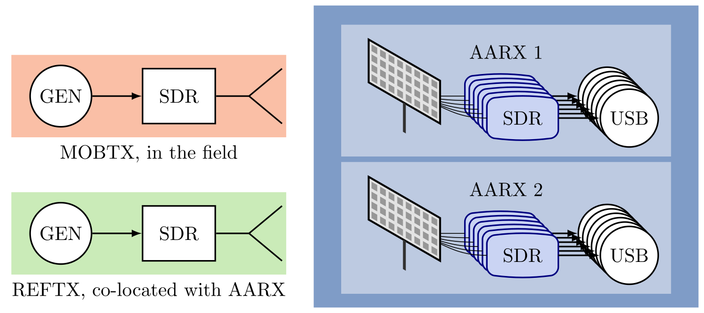
		</div>
	</div>

	<div class="row justify-content-center justify-content-lg-start">
		<div class="col-12 col-sm-12 col-md-10 col-lg-6 col-xl-6 p-3">
			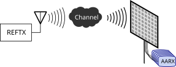
		</div>
		<div class="col-12 col-sm-12 col-md-12 col-lg-6 col-xl-6 p-3">
			<p>
				Well, it's true that all receivers (AARX) are synchronous to the reference signal, also called <i>synchronization broadcast</i>.
				However, they can only be synchronous to their respective received synchronization signal, not to the one that was actually transmitted.
				In other words, the channel between the reference transmitter (REFTX) and each receiver (AARX) has an impact on the synchronization!
			</p>
			<p>
				While almost all receivers should have a good (line-of-sight or, at least, low-attenuation) channel to the REFTX, each REFTX-receiver path may experience a different phase shift and path delay.
				This is because the REFTX signal still has to pass through a real-world physical environment channel, with different path lengths and possibly even multipath propagation.
			</p>
		</div>
	</div>

	<h2 class="text-center" style="font-weight: bold;">Without Offset Compensation</h2>
	<p>
		For now, we are going to completely ignore the issue of static phase offsets.
		Let's find out what happens if we plot the received phases over the physical position of antennas in the antenna array without any prior calibration whatsoever.
		In a line-of-sight scenario, we should, assuming phase-coherent receivers, hopefully see some patterns emerge, depending on the location of the transmitter.
		In this tutorial, we will use a single robot round trip from the <a href="/datasets/data/dichasus-015x/"><code class="nohighlight">dichasus-015x</code></a> dataset, namely <code class="nohighlight">dichasus-0152</code>:
		<pre class="m-0"><code class="language-bash">!mkdir dichasus
!wget --content-disposition https://darus.uni-stuttgart.de/api/access/datafile/:persistentId?persistentId=doi:10.18419/darus-2202/2 -P dichasus # dichasus-0152</code></pre>
	</p>

	<div class="row justify-content-center justify-content-lg-start">
		<div class="col-12 col-sm-12 col-md-6 col-lg-5 col-xl-5 p-3">
			<p class="my-3">
				As usual, let's fire up our Python / TensorFlow / NumPy environment and import the dataset.
				Since we are not doing any deep learning in this tutorial, it makes sense to already convert the CSI from a real / imaginary part format to a complex-valued tensor.
				Moreover, to simplify our mental model of the subcarriers, we can already apply the <a href="https://www.tensorflow.org/api_docs/python/tf/signal/fftshift"><code class="language-python">tf.signal.fftshift</code></a> function so that subcarriers are order from lowest frequency (at index 0) to highest frequency (at index 1023).
			</p>
		</div>
		<div class="col-12 col-sm-12 col-md-6 col-lg-7 col-xl-7 p-3">
			<pre class="m-0"><code class="language-python">import matplotlib.colors as colorsa
import matplotlib.pyplot as plt
import matplotlib.cm as cm
import tensorflow as tf
import numpy as np
import json
%matplotlib inline</code></pre>
		</div>
	</div>

	<pre class="m-0"><code class="language-python">def record_parse_function(proto):
	record = tf.io.parse_single_example(proto, {
		"csi": tf.io.FixedLenFeature([], tf.string, default_value = ''),
		"pos-tachy": tf.io.FixedLenFeature([], tf.string, default_value = '')
	})
		
	csi = tf.io.parse_tensor(record["csi"], out_type = tf.float32)
	csi = tf.signal.fftshift(csi, axes = 1)
	csi = tf.complex(csi[:,:,0], csi[:,:,1])
	pos_tachy = tf.ensure_shape(tf.io.parse_tensor(record["pos-tachy"], out_type = tf.float64), (3))
		
	# We only care about x/y position dimensions, z is always close to 0
	return csi, pos_tachy[:2]
	
datafiles = ["dichasus/dichasus-0152.tfrecords"]
dataset = tf.data.TFRecordDataset(datafiles).map(record_parse_function)
dataset = dataset.cache()</code></pre>

	<p>
		Our goal is to plot the received signal phases over the physical antenna position.
		Obviously, these phases depend on the transmitter position.
		We could, in theory, just create a plot for each and every datapoint in the whole dataset - for this tutorial, we will concentrate on three different, representative transmitter locations though:
		<ul>
			<li><b>Frontal</b>: The transmitter is directly in front of the receiver antenna array, at a distance of 3m</li>
			<li><b>Left</b>: Relative to the "frontal" position, the transmitter is moved 1m to the left of the antenna array</li>
			<li><b>Right</b>: Relative to the "frontal" position, the transmitter is moved 1m to the right of the antenna array</li>
		</ul>
	</p>

	<div class="row justify-content-center justify-content-lg-start">
		<div class="col-12 col-sm-12 col-md-6 col-lg-5 col-xl-5 p-3">
			<p class="my-3">
				In the following, we will create three datasets containing datapoints which are located in proxmity of the three afforementioned locations (frontal, left and right).
				We can do this by <a href="https://www.tensorflow.org/api_docs/python/tf/data/Dataset#filter">filtering</a> the dataset according to a certain predicate that determines whether any given datapoint is within a small radius of the respective location.
			</p>

			<p>
				Now that we have channel coefficient vectors for each of the three locations, we only need to plot the phases in a way that effectively generates a frontal view of the antenna array.
			</p>
		</div>
		<div class="col-12 col-sm-12 col-md-6 col-lg-7 col-xl-7 p-3">
			<pre class="m-0"><code class="language-python"># Generate filter function that returns true if datapoint was measured somewhere around given target location
def filter_around_point(point, radius):
	def f(csi, pos):
		return tf.norm(pos - tf.constant(point, dtype = tf.float64)) < radius
	return f
				
# Pass dataset through filter to generate frontal / left / right samples
points_frontal = dataset.filter(filter_around_point((-3.0, 0.0), 0.15))
points_left = dataset.filter(filter_around_point((-3.0, 1.0), 0.15))
points_right = dataset.filter(filter_around_point((-3.0, -1.0), 0.15))</code></pre>
		</div>
	</div>

	<div class="row justify-content-center justify-content-lg-start">
		<div class="col-12 col-sm-12 col-md-12 col-lg-6 col-xl-6 p-3">
			<p>
				To do that, though, we first have to figure out <i>where</i> to draw the measured phases, i.e., how to assign each of the phase values to an antenna in the array.
				All the required information for this is given at the <a href="/datasets/data/dichasus-015x/">dataset's description page</a>, namely in the <a href="http://localhost:1313/datasets/data/dichasus-015x/#antenna">antenna configuration</a> section.
			</p>
			<p>
				Most importantly, this is where you will find the "channel assignments" table.
				This table contains the mapping from the <i>channel</i> of the CSI vector (i.e., its antenna index in the CSI tensor, here in the range 0-31) to the position of the antenna in the array, as seen from a viewpoint in front of the array.
				For <code class="nohighlight">dichasus-015x</code>, these assignments are also illustrated in the picture.
				Please note that the assignments may be different from one dataset to another!
			</p>
		</div>
		<div class="col-12 col-sm-12 col-md-12 col-lg-6 col-xl-6 p-3 d-flex align-items-center justify-content-center">
			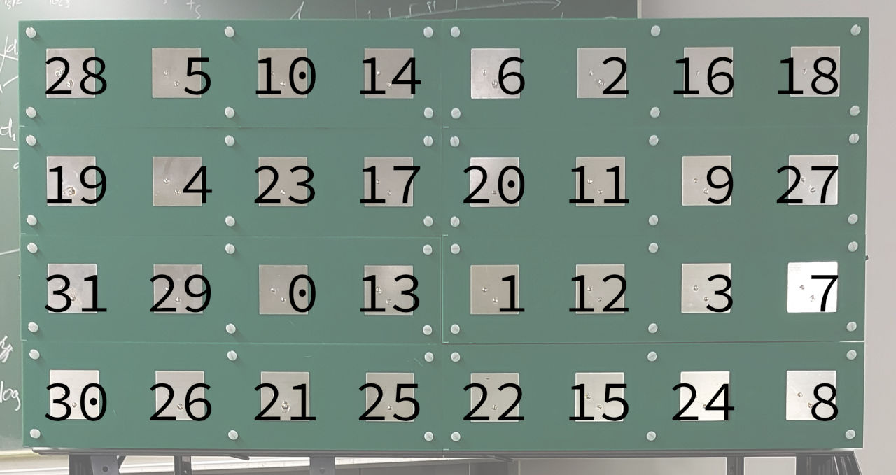
		</div>
	</div>

	<div class="row justify-content-center justify-content-lg-start">
		<div class="col-12 col-sm-12 col-md-12 col-lg-6 col-xl-6 p-3">
			<pre class="m-0"><code class="language-python">assignments = [
	[28,5,10,14,6,2,16,18],
	[19,4,23,17,20,11,9,27],
	[31,29,0,13,1,12,3,7],
	[30,26,21,25,22,15,24,8]
]
			
antennacount = np.sum([len(line) for line in assignments])
antennapos = np.zeros((antennacount, 2), dtype = int)
			
for y in range(len(assignments)):
	for x in range(len(assignments[y])):
		antennapos[assignments[y][x]] = np.asarray((x, y))</code></pre>
		</div>
		<div class="col-12 col-sm-12 col-md-12 col-lg-6 col-xl-6 p-3">
			<div class="my-3">
				<p>
					To make our lives easier, we can construct a look-up table called <code class="language-python">antennapos</code> from the channel assignments.
					In this table, for each channel \( 0 \ldots 31 \), we store the respective position of the antenna.
				</p>
				<p>
					Finally, we actually write a function <code class="language-python">plot_array_phases(dataset, subcarrier_start, subcarrier_count, title)</code> that plots the received phases.
					The two parameters <code class="language-python">subcarrier_start</code> and <code class="language-python">subcarrier_count</code> determine the subcarrier range (i.e., frequency range) over which to compute and plot the received phases.
					In fact, the function simply averages the received phases over this subcarrier range.
					In practice, unless a scatterer produces at only one particular frequency, the frequency range to plot does not really matter for line-of-sight channels.
					In the following, we will simply choose an arbitrary subcarrier range \( 512 \ldots 520 \) from somewhere in the middle of the spectrum.
				</p>
			</div>
		</div>
	</div>

	<p>
		Furthermore, the function still takes a TensorFlow dataset as an input (its first parameter).
		This dataset should already be filtered down to only contain datapoints within a limited physical area, as the function will average the received phases also over all contained datapoints.
	</p>

	<pre class="m-0"><code class="language-python">def plot_array_phases(dataset, subcarrier_start, subcarrier_count, title):
	dataset_phases = []
	
	for csi, pos in dataset:
		datapoint_phases = np.sum(csi.numpy()[:, subcarrier_start:subcarrier_start + subcarrier_count], axis = 1)
		datapoint_phases = datapoint_phases * np.conj(datapoint_phases[0])
		dataset_phases.append(datapoint_phases)
	
	antenna_phases_frontview = np.zeros((len(assignments), len(assignments[0])), dtype = np.complex128)
	for antenna, phase in enumerate(np.sum(dataset_phases, axis = 0)):
		pos = antennapos[antenna]
		antenna_phases_frontview[pos[1], pos[0]] = phase
	
	plt.title(title)
	plt.xlabel("Antenna Position X")
	plt.ylabel("Antenna Position Y")
	plt.imshow(np.angle(antenna_phases_frontview), cmap = plt.get_cmap("twilight"))
	plt.colorbar(shrink = 0.7)
	plt.show()</code></pre>

	<div class="row justify-content-center justify-content-lg-start">
		<div class="col-12 col-sm-12 col-md-6 col-lg-7 col-xl-9 p-3">
			It is now time for the long-awaited moment of truth:
			<pre class="m-0"><code class="language-python">plot_array_phases(points_frontal, 512, 8, "Frontal")
plot_array_phases(points_left, 512, 8, "Left")
plot_array_phases(points_right, 512, 8, "Right")</code></pre>

			<p>
				The results we obtain are rather... disappointing.
				To put it bluntly, the phases we measure appear to be completely random, there is no visible pattern whatsoever.
				Even worse, just looking at the phase plots, there is no way on earth we would be able to distinguish the three different transmitter positions.
			</p>

			<p>
				Admittedly, this is not really unexpected:
				We already established that each antenna has a constant phase and time offset that we have not compensated for up until this point.
				The seemingly random phase plots only illustrate this point once again.
			</p>

			<p>
				So, how exactly do the phase and time offsets manifest themselves in the measured channel coefficients?
				To understand this, we must first recap some basics about channel coefficients, modulation and fourier transforms.
			</p>
		</div>
		<div class="col-12 col-sm-12 col-md-6 col-lg-5 col-xl-3 p-3 d-flex flex-column align-items-center justify-content-center">
			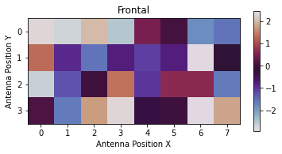
			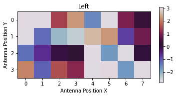
			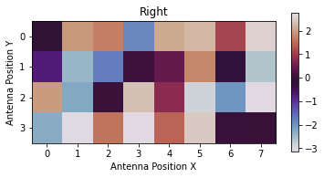
		</div>
	</div>

	<h2 class="text-center" style="font-weight: bold;">Phase and Timing Offset Compensation</h2>
	<p>
		As discussed earlier, while every receiver is synchronous to its received reference signal, this received signal may exhibit a receiver-specific, constant phase offset and time delay.
		The DICHASUS "main" transmitter (MOBTX) is based on a cyclic prefix-orthogonal frequency division multiplex (CP-OFDM) modulation.
		So, what happens if we demodulate the pilot symbols in the received MOBTX signal with a fixed phase and time offset?
		What is the effect of these time-domain shifts on the frequency-domain constellation symbols?
	</p>

	<p>
		From Fourier analysis, we know that a shift of any signal \( s(t) \) in the time domain by \( \tau_\mathrm{STO} \) results in a multiplication with \( \mathrm e^{\mathrm j 2 \pi f \tau_\mathrm{STO} } \) in the frequency domain:
		\[
			\mathcal F \left\{ s(t) \right\} = S(f) ~ \implies ~ \mathcal F \left\{ s(t - \tau_\mathrm{STO}) \right\} = S(f) \cdot \mathrm e^{\mathrm j 2 \pi \tau_\mathrm{STO} f}
		\]
		This is exactly what we experience when we demodulate an OFDM symbol without getting the sampling instances exactly right, but shifted by a constant delay.
		More specifically, if the "true" channel coefficient (just the physical environment phase shift, without offset) for the \( m \)-th receive antenna and the \( i \)-th subcarrier is given by \( h_{m, i} \), the channel coefficient that we actually measure is
		\[
			a_{m, i} = h_{m, i} ~ \mathrm{e}^{\mathrm{j} (\varphi_m + 2 \pi ~ \tau_{\mathrm{STO}, m} ~ i \Delta f_\mathrm{sub, mob})}.
		\]
		In this equation, \( \varphi_m \) denotes the static phase offset term for antenna \( m \), \( \tau_{\mathrm{STO}, m} \) is its sampling time offset and \( \Delta f_\mathrm{sub, mob} \) is the subcarrier spacing.
		Here, \( \tau_{\mathrm{STO}, m} \) is expressed in a physical unit of time, i.e., in seconds.
		For practical purposes, it can be a advantageous to normalize \( \tau_{\mathrm{STO}, m} \) to the sampling interval \( t_\mathrm{s} = \frac{1}{B} \) (with signal bandwidth = sampling frequency \( B \)) to obtain a sampling time offset \( d_{\mathrm{STO}, m} = B ~ \tau_{\mathrm{STO}, m} \) value measured in <i>samples</i>.
		In addition, we can also rewrite \( \Delta f_\mathrm{sub, mob} \) as \( \Delta f_\mathrm{sub, mob} = \frac{B}{N_\mathrm{sub}} \), where \( N_\mathrm{sub} \) denotes the total number of subcarriers.
		With these simplifications, we finally obtain
		\[
			a_{m, i} = h_{m, i} ~ \mathrm{e}^{\mathrm{j} \left(\varphi_m + 2 \pi ~ d_{\mathrm{STO}, m} ~ \frac{i}{N_\mathrm{sub}}\right)}.
		\]
	</p>

	<p>
		The above equation contains a <i>phase correction term</i> \( \mathrm{e}^{\mathrm{j} \left(\varphi_m + 2 \pi ~ d_{\mathrm{STO}, m} ~ \frac{i}{N_\mathrm{sub}}\right)} \) for every subcarrier channel coefficient.
		For any channel coefficient with antenna index \( m \) and the subcarrier index \( i \), this correction term can be computed based on \( \varphi_m \) and \( d_{\mathrm{STO}, m} \).
		Luckily, we at the Institute of Telecommunications have found a reliable method to estimate these two offset parameters and we are publishing our calibration data alongside every applicable dataset.
		For <code class="nohighlight">dichasus-015x</code>, you can <a href="/datasets/data/dichasus-015x/#reftx-compensation">download a JSON file</a> with these parameters from our website:
		<pre class="m-0"><code class="language-bash"># Download JSON file with phase offsets (in radians) and sampling time offsets (in samples)
!wget https://dichasus.inue.uni-stuttgart.de/datasets/data/dichasus-015x/reftx-offsets-dichasus-015x.json -P dichasus</code></pre>
	</p>

	<div class="row justify-content-center justify-content-lg-start">
		<div class="col-12 col-sm-12 col-md-12 col-lg-6 col-xl-6 p-3">
			<pre class="m-0"><code class="language-python">offsets = None

with open("dichasus/reftx-offsets-dichasus-015x.json", "r") as offsetfile:
	offsets = json.load(offsetfile)</code></pre>
			As we can see after loading the file, its structure is really simple:
		</div>
		<div class="col-12 col-sm-12 col-md-12 col-lg-6 col-xl-6 p-3">
			<pre class="m-0"><code class="language-javascript">{
	"cpo" : [ list of carrier phase offsets in radians, for antennas 0...31 ],
	"sto" : [ list of sampling time offsets in samples, for antennas 0...31 ]
}</code></pre>
			Note that phase offsets and time offsets are normalized to antenna number 0, i.e., the first entry in both lists is always 0.
		</div>
	</div>

	<div class="row justify-content-center justify-content-lg-start">
		<div class="col-12 col-sm-12 col-md-12 col-lg-6 col-xl-7 p-3">
			Let's plot the phase of the <i>phase correction term</i>, namely \( \varphi_m + 2 \pi ~ d_{\mathrm{STO}, m} ~ \frac{i}{N_\mathrm{sub}} \), for all 32 antennas (different colors) over all subcarrier indices \( i \):
			<pre class="m-0"><code class="language-python">sto_offset = tf.tensordot(tf.constant(offsets["sto"]), 2 * np.pi * tf.range(1024, dtype = np.float32) / 1024.0, axes = 0)
cpo_offset = tf.tensordot(tf.constant(offsets["cpo"]), tf.ones(1024, dtype = np.float32), axes = 0)
correction_phase = (sto_offset + cpo_offset).numpy()
plt.figure(figsize=(8, 5))
plt.xlabel("Subcarrier Index")
plt.ylabel("Phase Correction Term [rad]")
plt.plot(np.transpose(correction_phase))
plt.show()</code></pre>
		</div>
		<div class="col-12 col-sm-12 col-md-12 col-lg-6 col-xl-5 p-3 d-flex justify-content-center align-items-center">
			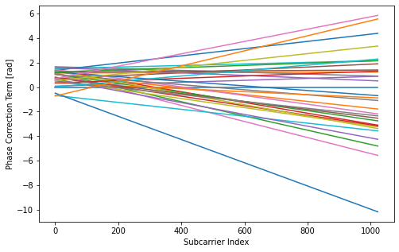
		</div>
	</div>

	<p>
		Nothing surprising here, really. Clearly, the phase offset leads to a subcarrier-specific phase shift that increases linearly over the subcarrier index.
		For this particular dataset, the antenna corresponding to the blue curve (antenna number 30) has the largest time offset, \( d_\mathrm{STO, 30} \approx -1.5 \) samples.
	</p>

	<p>
		Once we know how to compute the constant phase correction terms for all channel coefficients, it is easy to calibrate of datapoints.
		We do this by writing a <a href="https://www.tensorflow.org/api_docs/python/tf/data/Dataset#map">a map function</a> that can be applied to each element (CSI tensor and label) of the dataset to calibrate.
		The function is written such that it is independent of the number of subcarriers used to measure the particular dataset.
	</p>

	<pre class="m-0"><code class="language-python">def apply_calibration(csi, pos):
	sto_offset = tf.tensordot(tf.constant(offsets["sto"]), 2 * np.pi * tf.range(tf.shape(csi)[1], dtype = np.float32) / tf.cast(tf.shape(csi)[1], np.float32), axes = 0)
	cpo_offset = tf.tensordot(tf.constant(offsets["cpo"]), tf.ones(tf.shape(csi)[1], dtype = np.float32), axes = 0)
	csi = tf.multiply(csi, tf.exp(tf.complex(0.0, sto_offset + cpo_offset)))
	return csi, pos</code></pre>

	<div class="row justify-content-center justify-content-lg-start">
		<div class="col-12 col-sm-12 col-md-12 col-lg-7 col-xl-9 p-3">
			Let's test the calibration function on our three small datasets "frontal", "left" and "right":

			<pre class="m-0"><code class="language-python">points_frontal_calibrated = points_frontal.map(apply_calibration)
points_left_calibrated = points_left.map(apply_calibration)
points_right_calibrated = points_right.map(apply_calibration)</code></pre>

			After calibration, the phases in the datasets can be interpreted as if they were actually measured with all receivers perfectly in sync: Same sampling instances, same local oscillator phases.
			Again, we visualize the results for the three locations in this line-of-sight dataset by plotting the antenna phase over the physical antenna position, using the <code class="language-python">plot_array_phases</code> function we wrote earlier:
			<pre class="m-0"><code class="language-python">plot_array_phases(points_frontal_calibrated, 512, 8, "Frontal")
plot_array_phases(points_left_calibrated, 512, 8, "Left")
plot_array_phases(points_right_calibrated, 512, 8, "Right")</code></pre>

			This time, we finally see the "textbook-like" phase pattern that we would expect for a uniform linear array (ULA):
			<ul>
				<li>If the transmitter is in front of the array, the received phase decreases from the bottom to the top. This is because the antenna array is mounted at a hight of approximately 1.2m above the transmit antenna, so that the electromagnetic wave arrives earliest at the lowest row.</li>
				<li>If the transmitter is to the left or to the right of the array, in addition to the phase decrease from bottom to top, we can also see a decrease from the left to the right or inversely, respectively.</li>
			</ul>
		</div>
		<div class="col-12 col-sm-10 col-md-7 col-lg-5 col-xl-3 p-3 d-flex flex-column align-items-center justify-content-center">
			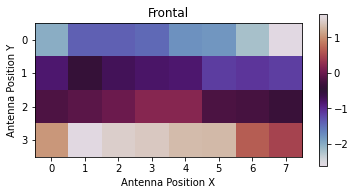
			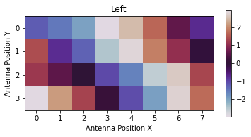
			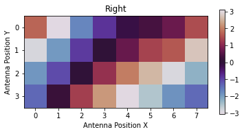
		</div>
	</div>

	<h2 class="text-center" style="font-weight: bold;">Classical Angle of Arrival (AoA) Estimation</h2>
	<div class="row justify-content-center justify-content-lg-start">
		<div class="col-12 col-sm-12 col-md-12 col-lg-6 col-xl-7 p-3">
			<p>
				But wait... doesn't this mean that, instead of <a href="/tutorials/tutorial/positioning/">applying neural networks</a> to the task of transmitter position estimation, we could now just apply classical techniques?
				Well yes, it does!
				In the following, we are going to look at a very simple approach to this topic - note that much better, more advanced methods are available, such as the <a href="https://en.wikipedia.org/wiki/MUSIC_(algorithm)">MUSIC algorithm</a>.
				Within the scope of this tutorial, we only care about showing that classical AoA estimation is <i>at all</i> possible with DICHASUS data.
			</p>
			<p>
				The following code snippets estimate the phase difference between antennas that are horizontal neighbors (for a small subcarrier range).
				Subsequently, this this measured phase difference is transformed to an AoA estimate using the well-known ULA AoA equation, i.e.,
				\[
					\Delta \varphi = \frac{2 \pi f_\mathrm{c}}{c} ~ \sin(\vartheta),
				\]
				where \( \Delta \varphi \) is the estimated phase difference between neighboring antennas, \( f_\mathrm{c} \) is the carrier frequency, \( c \) is the speed of light and \( \vartheta \) is the angle of arrival of the electromagnetic wave, measured relative to the perpendicular (see sketch).
			</p>
		</div>
		<div class="col-12 col-sm-12 col-md-9 col-lg-6 col-xl-5 p-3 d-flex flex-column align-items-center justify-content-center">
			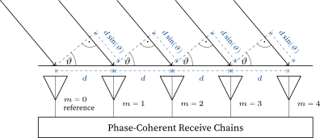
		</div>
	</div>

	But first, we have to apply phase calibration to the <i>complete</i> dataset:
	<pre class="m-0"><code class="language-python"># Apply phase calibration to complete dataset
dataset_calibrated = dataset.map(apply_calibration)</code></pre>

	For estimating \( \Delta \varphi \), we use <a href="https://ieeexplore.ieee.org/document/45547">Steven Kay's frequency estimator</a>.
	The other code just computes the incident angles \( \vartheta \), which is obtained by solving the ULA AoA equation for \( \vartheta \).
	<pre class="m-0"><code class="language-python">antenna_distance = 0.118

def estimate_frequency(samples):
	# Kay's Single Frequency Estimator:
	# S. Kay, "A fast and accurate single frequency estimator" in IEEE Transactions on Acoustics, Speech, and Signal Processing,
	# vol. 37, no. 12, pp. 1987-1990, Dec. 1989, doi: 10.1109/29.45547.
	N = len(samples)
	w = (3 / 2 * N) / (N**2 - 1) * (1 - ((np.arange(0, N - 1) - (N / 2 - 1)) / (N / 2))**2)
	return sum([w[t] * np.angle(np.conj(samples[t]) * samples[t + 1]) for t in np.arange(0, N - 1)])
		
def estimate_angles(dataset, subcarrier_start, subcarrier_count, fcarrier, bandwidth):
	positions = []
	angle_estimates = []
			
	for csi, pos in dataset:
		subcarriers = csi.shape[1]
		csi_mean = tf.math.reduce_sum(csi[:,subcarrier_start:subcarrier_start + subcarrier_count], axis = 1).numpy()
		wavelength = 299792458 / (fcarrier + bandwidth * (-subcarriers / 2 + subcarrier_start + subcarrier_count / 2) / subcarriers)
		phase_diff = np.mean([estimate_frequency(csi_mean[row]) for row in assignments])
		wavelength_diff = phase_diff * wavelength / antenna_distance / (2 * np.pi)
		
		angle_estimate = None
		if wavelength_diff <= -1:
			angle_estimate = -np.pi / 2
		elif wavelength_diff >= 1:
			angle_estimate = np.pi / 2
		else:
			angle_estimate = np.arcsin(wavelength_diff)
		
		positions.append(pos.numpy())
		angle_estimates.append(angle_estimate)
				
	return np.vstack(positions), np.hstack(angle_estimates)</code></pre>

	<div class="row justify-content-center justify-content-lg-start">
		<div class="col-12 col-sm-12 col-md-12 col-lg-6 col-xl-7 p-3">
			<p>
				Let's generate and plot some phase estimates!
				This may take a short while to compute.
			</p>
			<pre class="m-0"><code class="language-python">positions, angle_estimates = estimate_angles(dataset_calibrated, 512, 520, 1.272e9, 50e6)

plt.figure(figsize=(10,10))
plt.hexbin(positions[:,0], positions[:,1], C = np.rad2deg(angle_estimates), gridsize = 25)
plt.xlabel("Transmitter Position X")
plt.ylabel("Transmitter Position Y")
plt.colorbar(label = "AoA Estimate [deg]")
plt.show()</code></pre>
			<p>
				Remember that, in our dataset, the antenna array is located at \( (x, y) = (0, 0) \) and points in the negative \( x \) direction.
				The diagram that is generated is pretty convincing: We can clearly see the color gradient from the steep incident angles to the right of the antenna array (dark blue) to the angles on the left of the array (yellow).
			</p>
			<p>
				Based on the position label of every datapoint, we can also compute an "ideal" AoA value for every datapoint and compare estimate and ideal value.
				Let's plot this estimation error in a histogram.
			</p>
		</div>
		<div class="col-12 col-sm-12 col-md-9 col-lg-6 col-xl-5 p-3 d-flex flex-column align-items-center justify-content-center">
			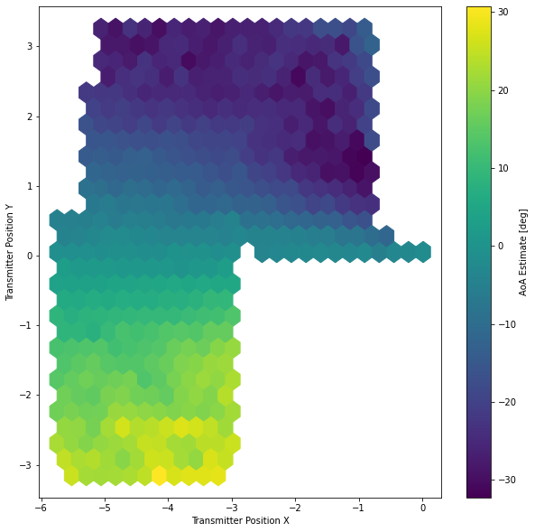
		</div>
	</div>

	<div class="row justify-content-center justify-content-lg-start">
		<div class="col-12 col-sm-12 col-md-9 col-lg-6 col-xl-5 p-3 d-flex flex-column align-items-center justify-content-center">
			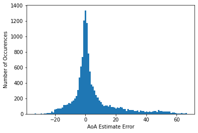
		</div>
		<div class="col-12 col-sm-12 col-md-12 col-lg-6 col-xl-7 p-3">
			<pre class="m-0"><code class="language-python">true_angles = np.arctan2(-positions[:,1], -positions[:,0] + 0.2)
est_error = np.rad2deg(np.angle(np.exp(1.0j * angle_estimates) * np.conj(np.exp(1.0j * true_angles))))
plt.xlabel("AoA Estimate Error")
plt.ylabel("Number of Occurences")
plt.hist(est_error, bins = 100)
plt.show()
print("MAE:", np.mean(np.abs(est_error)), "degrees")</code></pre>
		<p>
			Looking at a histogram of the AoA estimation error, we see that for most datapoints, the error is somewhere below \( 10^\circ \).
			In fact, the mean absolute error (MAE) we obtain is \( 9^\circ \).
			While this is worse than what we could have achieved using a neural network-based approach (typically \( 3^\circ - 5^\circ\) MAE), it clearly shows that classical AoA estimation is possible.
		</p>
		</div>
	</div>

	<h2 class="text-center my-4" style="font-weight: bold;">Conclusion</h2>
	<p>
		The results obtained in this tutorial show that the channel measurements performed with DICHASUS indeed reflect the physical reality.
		We also saw that the calibration of static phase and time offsets, which naturally occur due to the reference transmitter architecture, is absolutely crucial.
	</p>
	<p>
		This kind of offset compensation is only relevant for classical signal processing methods though.
		When applying deep learning to DICHASUS datasets, neural networks will automatically learn all offsets in the training data and, since the offset are constant, account for the learned biases during inference.
		In fact, deep learning methods do not even need to know the physical setup of antennas.
		It is reassuring to see, though, that after careful calibration, classical methods can reach performance that is comparable to deep learning-based approaches for typical regression problems.
	</p>

	<h4 class="text-center my-4" style="font-weight: bold;">Licensing and Authors</h4>
	All our datasets are licensed under the <a href="https://creativecommons.org/licenses/by/2.0/">CC-BY license</a>, i.e., you are free to use them for whatever you like as long as you reference us in your publications.
	All code in this tutorial is <a href="https://creativecommons.org/publicdomain/zero/1.0/">CC0-licensed</a>.
	This tutorial was written by <a href="mailto:florian.euchner@inue.uni-stuttgart.de">Florian Euchner</a>.
</main>